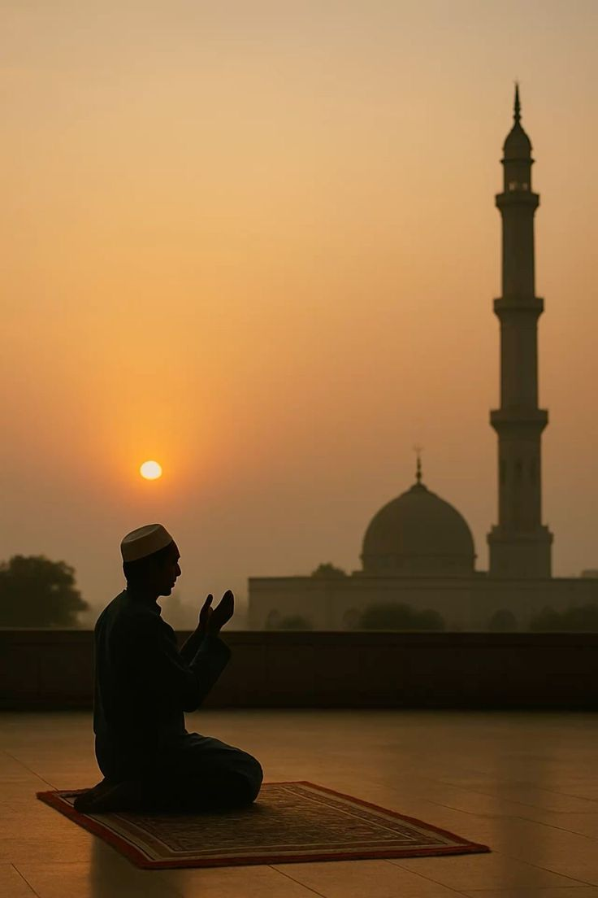

My name is Boham John Fatawu. I was born in Accra on the 1st of September,2005 to loving parents, Mr. and Mrs. Boham. Growing up in a close-knit family with two siblings, I was instilled with strong values and sense of responsibility. My parents, both devout Muslims, taught me the importance of faith, kindness, and hard work.
My educational journey began at De Youngster's Int. School, where I developed a passion for learning and completed my basic education from. I later got admitted to Oda Senior High School, one of Dr. Kwame Nkrumah schools established to groom students in Ghana, where I was actively involved in extracurricular activities, including sports and IT clubs.
My academic achievements earned me an admission to study Information Technology at University of Professional Studies, Accra, where I am currently.
Click on the link to visit my senior high school website.

Islam has played a significant role in my life. Growing up as a Muslim, I was taught the importance of prayer, fasting and charity. My faith has guided me through life's challenges amd helped me develop a sense of purpose and responsibility.
I strive to apply the principles of Islam in my daily life, including honesty,compassion, and fairness.
This is a religious video from youtube.
Throughout my school days, I was actively involved in social activities, including sports, community service, and cultural events. I was part of a close-knit group of friends who shared similar interests and values.
We supported each other through thick and thin, and our friendships have endured to this day.